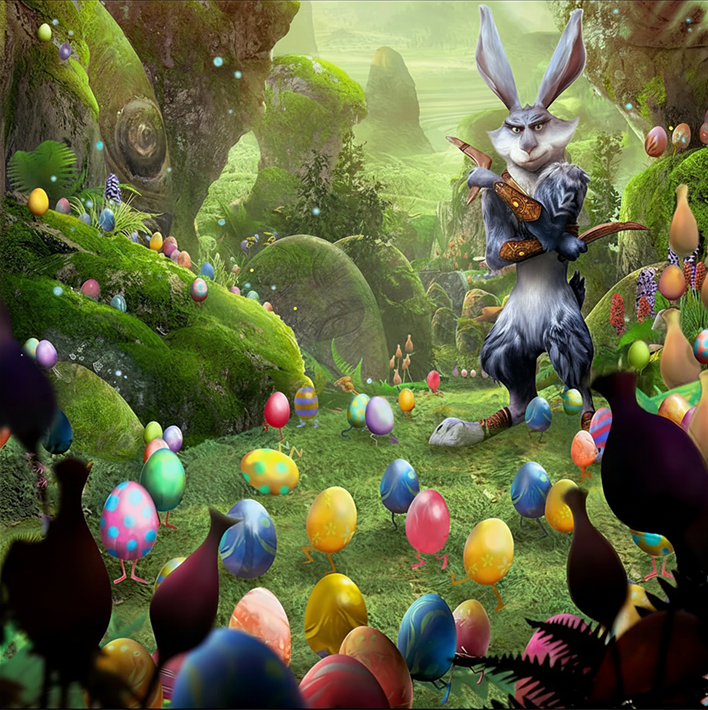

About Easter Bunny
Bunny was about six foot two (187.96 cm). is one of the main protagonist in Rise of the Guardians from movie. He came from the Pooka, a race that resembled humanoid rabbits, having grey fur and green eyes. Bunny was one of the oldest members in the Guardians, and always retained his muscular form as long as kids believed in him.
However, after kids stopped believing in Bunny, he was reduced by a small, fluffy bunny who Jamie commented looked "cute." However, when the kids believed in him again, Bunny returned back to his normal size. "

Bunny and easter eggs.
Bunnymund’s characteristics
- Bunnymund has the physical prowess of a rabbit at its peak, enabling him incredible speed and jumping abilities.
- He has the power to control flora growth, sometimes making a flower grow whenever his tunnels close up. In the Warren, he has various flowers and plants with magical abilities that help him paint and decorate his easter eggs.
- Bunny can open holes to underground tunnels by tapping his foot on the ground. This allows him to travel anywhere in the world in a matter of seconds. He taps his foot twice to travel, and appears to tap thrice to summon something from the tunnels, as he did when he summoned some of his sentinel eggs to fight Pitch and his Nightmares.
- Easter Bunny clearly has access to magic, given his enchanted boomerangs and explosive easter eggs.

Bunny and his boomerangs.